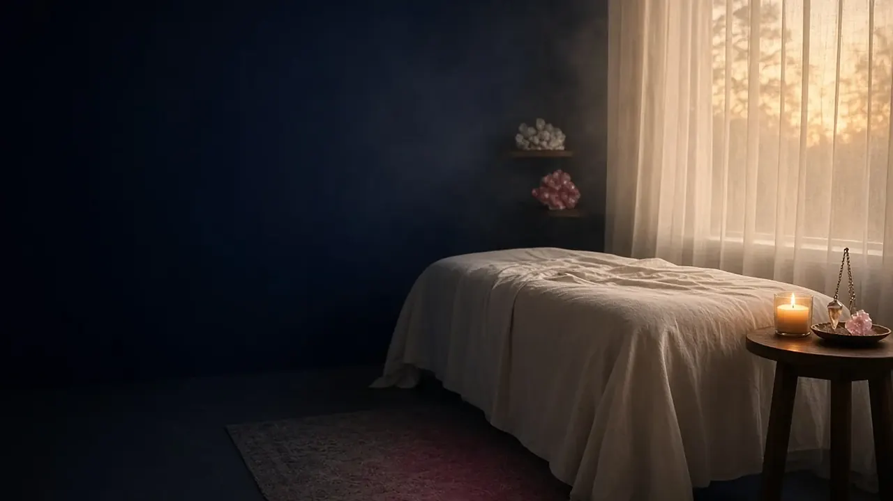
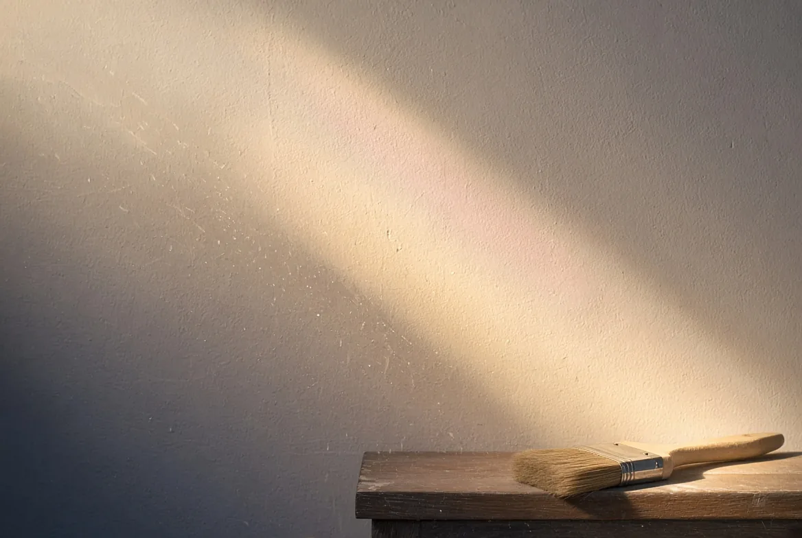
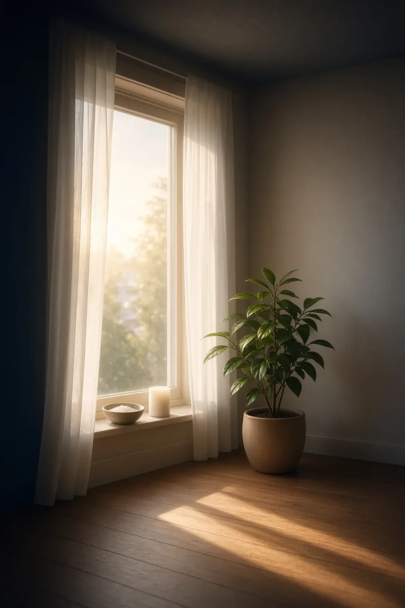

Premier rendez-vous
100€
1h45
Le premier nettoyage énergétique est généralement très important : tenez-en compte pour vos occupations ou rendez-vous ce jour-là.

Un bilan énergétique, un nettoyage énergétique puissant puis un soin par magnétisme, sans contact, pour libérer les blocages et retrouver l’harmonie. Au cabinet de Neder-Over-Heembeek.


Le nettoyage énergétique
C’est pareil en énergétique : je ne prodigue pas de soin avant d’avoir fait un nettoyage. Tout doit être « propre » avant de travailler sur vos chakras, vos corps subtils, vos méridiens.

Des énergies perturbatrices invisibles, qu’elles viennent de vos peurs, de vos ruminations, de disputes, d’âmes errantes ou d’autres sources, y compris ce que certains appellent des maléfices. Que vous y croyiez ou non, cela ne m’empêche pas de vous en libérer.
Le soin énergétique vise à rééquilibrer et recharger les corps énergétiques, réharmoniser les chakras et recharger les organes, pour libérer les blocages et les tensions et permettre une circulation harmonieuse de l’énergie vitale, au service de votre bien-être.
Déroulement d’une séance
Au cours de la séance, je travaille sur l’ensemble du corps sans le toucher, et j’insiste sur les zones de déséquilibre que je ressens au travers de mes mains.


Nous échangeons brièvement sur la raison pour laquelle vous faites appel à moi : un mal-être général, expliqué ou non, l’impression que les choses ne tournent pas rond, des blocages dans votre vie, des schémas qui se répètent, ou l’envie d’un accompagnement pendant une période difficile.
J’ai recours à mes planches de radiesthésie : elles me permettent d’évaluer votre taux vibratoire, votre taux de vitalité et bien d’autres repères énergétiques. Je vérifie aussi quelles approches vous conviennent le mieux : magnétisme, Fleurs de Bach…
Ce bilan est énergétique : il ne remplace pas un diagnostic médical.
Place au magnétisme. Je procède à un nettoyage énergétique puissant, puis j’harmonise, rééquilibre et recharge vos corps subtils et vos chakras. Lors des séances suivantes, et parfois dès la première, je travaille à la libération de mémoires cellulaires, de blessures de l’âme, de liens toxiques.
La consultation se termine par un échange sur la séance : ce que vous avez ressenti, le message que j’ai à vous transmettre, et un éventuel nouveau rendez-vous dans quelques semaines si vous souhaitez poursuivre le travail entamé.
Libération des mémoires et blocages
Un travail profondément libérateur, qui se loge souvent au niveau inconscient. Au fil des séances, le but est de nettoyer toutes les « couches d’oignon » qui vous empêchaient de retrouver votre « moi » véritable.
Mémoires remontant à la petite enfance, à l’adolescence, à la vie d’adulte, transgénérationnelles, in utero, karmiques…
Les cinq blessures de l’âme sur lesquelles nous pouvons travailler, ainsi que les liens toxiques et les schémas répétitifs. Des protocoles plus spécifiques sont aussi possibles.
Durée et tarifs
3 à 5 séances pour la plupart des personnes, avec quelques semaines entre chacune pour permettre au corps d’intégrer le travail énergétique.
Premier rendez-vous
100€
1h45
Le premier nettoyage énergétique est généralement très important : tenez-en compte pour vos occupations ou rendez-vous ce jour-là.
Séances suivantes
85€
1h30
Pour poursuivre le travail entamé : libération profonde et déprogrammation cellulaire, entre autres. Le but ultime : un bel équilibre, en toute autonomie.
Quand consulter ?
Un accompagnement bien-être, en complément du suivi par votre médecin, dans des moments comme ceux-ci :
À valider avec Joëlle La liste du site actuel cite des maladies (infertilité, bronchite, zona, arthrose, dépression…) : elle a été reformulée pour ne pas présenter le magnétisme comme un traitement.
Le magnétisme ne remplace en aucun cas l’avis d’un professionnel de la santé ou de votre médecin. Je ne vous ferai jamais arrêter un traitement médical et je vous encouragerai à faire les examens prescrits par votre médecin : lui seul est compétent pour poser un diagnostic médical.
Si vous optez pour une approche énergétique et que l’aide apportée n’est pas au rendez-vous, je vous inviterai à consulter votre médecin ou un autre professionnel de la santé.
Une minute pour vous : inspirez 4 secondes, expirez 6 secondes.
Après la séance
Vous vous sentirez plus léger et plus serein. Chacun ressent la séance à sa façon : parfois tout de suite, parfois dans les jours qui suivent.
Il est important de bien vous hydrater et de vous reposer après la séance. Lorsque c’est utile et possible, il m’arrive aussi de travailler à distance sur votre lieu de vie pendant votre soin.

Et votre lieu de vie ?
Si un nettoyage énergétique des lieux plus conséquent est souhaitable, nous pouvons le planifier : je me rends chez vous au moment convenu pour purifier énergétiquement votre habitat.
Ce rendez-vous n’est pas compris dans le prix de votre soin personnel.

Après une séance, on se sent à sa place, aligné, ancré et rempli d’énergie. Joëlle est tellement douce que lorsqu’on ressort de chez elle, c’est comme si on avait pris un bain de lumière.
Tatiana
Vos questions
Joëlle répond aux questions qu’on lui pose le plus souvent dans son blog.

Le premier pas
Premier rendez-vous de 1h45 au cabinet de Neder-Over-Heembeek. Contactez-moi par WhatsApp, SMS ou téléphone.